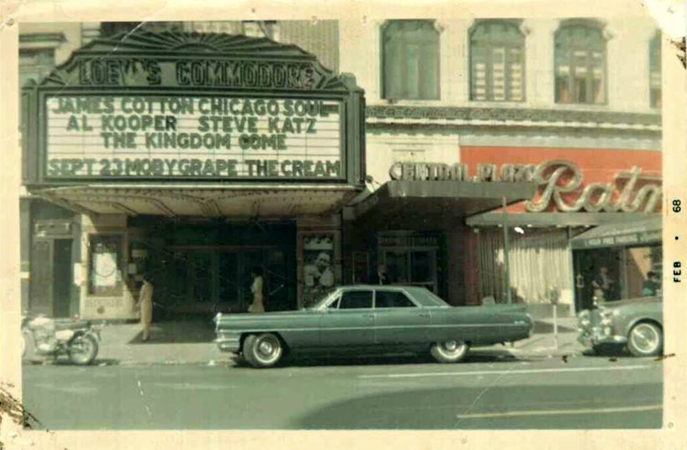

Amsterdam and 76th, looking uptown
Amsterdam and 76th, looking uptown

Granny got game
The Cookery, 1977

8th Ave near 45th St, 1970s
Find the queen, find the queen…

Peace and love, 1960s in Washington Square Park
28th Street, between 6th and 7th, 1985

Union Square, 1980s

Too cool for school. Bensonhurst, 1983
Cops in Times Square, 1981
The Black Students League at Stuyvesant High School, 1982

Jammin’ in Brooklyn, 1977

Brooklyn Academy of Music, 1978

14th Street and 3rd Ave, 1982

July 1964. “Two boys in street, one riding inside hand truck.” First selection from the epic oeuvre of New York street photographer Angelo Rizzuto (1906-1967), a “troubled recluse” whose work remained unknown and unappreciated until long after his death. (Photo & caption text via shorpy.com)

NYC Photo by James Burke, 1960
Broken heel in 3, 2, 1……

6th Ave and 9th St, 1985

Lonely subway rider

84th Street block party, 1982
Brandeis High School yard in the 80s. If you don’t think the Upper West Side was ever bad-ass, you never went to Brandeis.
A WTF moment in midtown, 1976
Skygazing, 1976

Brooklyn Bridge, 1972
Times Square, 1987
A couple roller skating to work during the transit strike in New York, 1966. Photographed by Arthur Schatz.

You can’t read that map, man.


Keith Haring painting his Life is Fresh, Crack is Wack mural at P.S. 97 in New York City, 1986.
Photos by Tseng Kwong Chi

She rich.
Lex and 102nd, 1976

32nd Street between 6th and 7th, 1982

Amsterdam Ave at 60th Street, 1969

Broadway and 97th, looking uptown, 1970
Big Wheel in Central Park, 1980s
Fixer-uppers in Alphabet City, 1983

Broadway, looking uptown from 88th Street, 1970s

Pretzel man, 1980
Nice piece

196th Street and Valentine Ave in the Bronx, 1980s

Headed to Coney Island, 1980

Bruce Gilden, 5th Avenue, NYC, 1975
A tale of two cities
Outside the Met

Times Square slush puddle

For Esmé with love and squalor. 1960s in the Bronx.

Streit’s Matzos on Rivington Street, 1975

Dave’s Restaurant at Broadway and Canal, 1984

1971, the Bronx.

Word

Village Theatre (soon to become Fillmore East), NYC - 1967
Broadway and 86th, in 1969

Somewhere on the Upper West Side, 1969